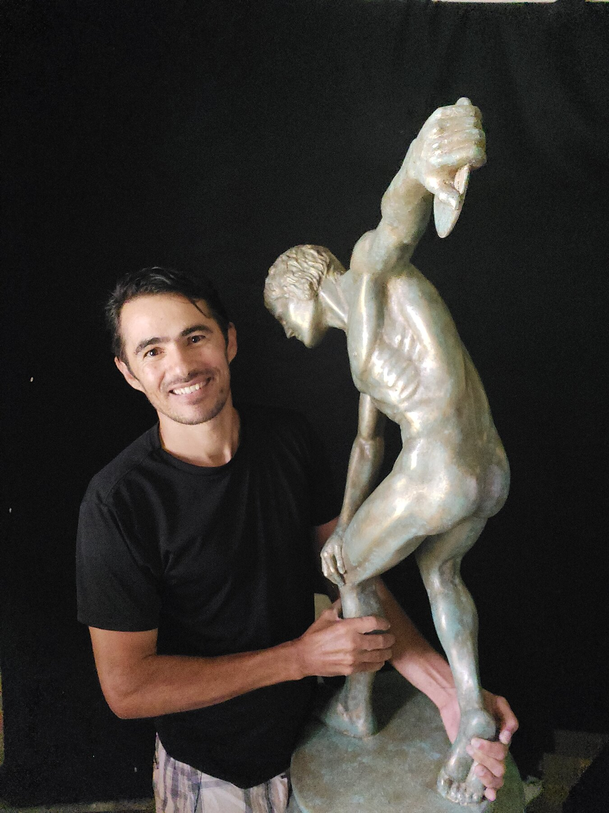

←
Voltar
‹
›
Peça
Material
Dimensões
Ano
Local

Esculturas monumentais em mármore, bronze e resina — reinterpretações de obras clássicas para espaços privados.
Cada peça parte de uma referência da escultura clássica greco-romana, reconstruída em escala monumental e instalada em residências e propriedades privadas pelo Brasil.
Renato Esperança é o escultor por trás de cada peça deste acervo. Seu ateliê, em Brasília, se dedica a reinterpretar os grandes ícones da escultura greco-romana — Discóbolo, Apolo, a Vitória de Samotrácia — reconstruídos em escala monumental para residências, jardins e propriedades privadas.
O processo mistura o rigor técnico da escultura clássica com materiais contemporâneos — resina, fibra de vidro, mármore reconstituído — permitindo que obras historicamente talhadas em pedra ganhem escala monumental e resistam ao tempo ao ar livre, à beira d'água ou em jardins expostos ao clima do cerrado.